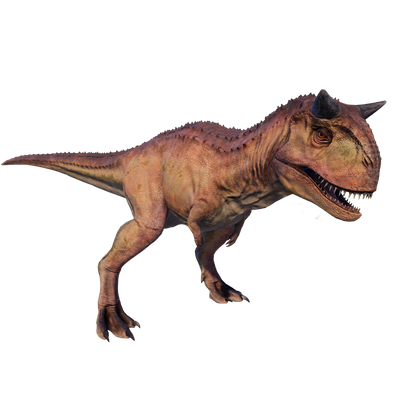

Useful Website
Notable for the thick horns above its eyes, Carnotaurus is a theropod from the Late Cretaceous period. Weighing around 2 tonnes and spanning 10m in length with two rows of long, sharp teeth, this carnivorous dinosaur was the apex predator of its era – and the combination of its unique horns and flesh-ripping teeth gave Carnotaurus its name, meaning ‘meat-eating bull’.
